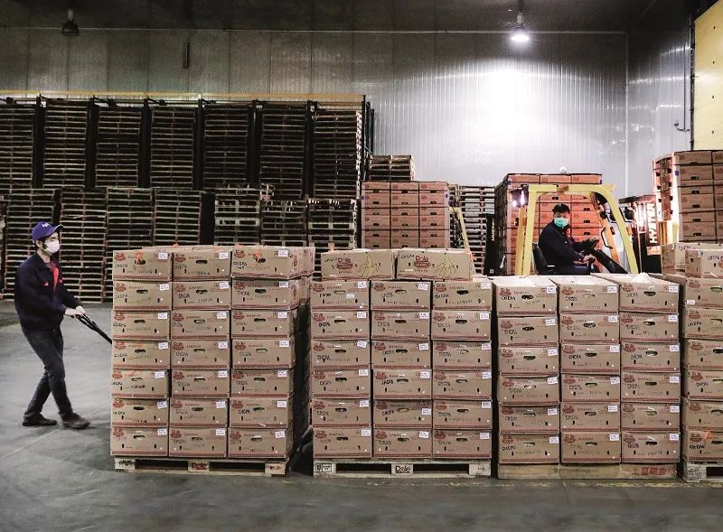

疫情下，公益人的「生死一线」｜故事FM
原文链接 备份链接 🎧 点击上方图片，跳转「故事FM」小程序，收听真人讲述。记得添加「我的小程序」，一键收听全部故事哟！ 在这次疫情期间，我们听说了各种志愿者献爱心、捐助的故事。每到这种大的困难出现的时候，大家都热情高涨，希望可以尽一份 …

疫情期间口罩紧缺导致价格飞涨，跨境口罩交易因此异常活跃。这是一个关于越南口罩收货人和俄罗斯口罩发货人的故事，他们都在中间的物流环节出现了问题。“疫情是人性的一面镜子”，人与人之间最重要的信任感与名誉，被稀释了

文 |《财经》记者 黎诗韵 陈晶
编辑 | 宋玮
距离原定的收货日期已经过去一月有余了，收货人冯婷还未收到物流寄送回国的越南口罩。
冯婷是四川自贡市一家民营企业骏宸集团的董事长。2020年春节前，她自费45万元通过越南发货商，为自贡市区县政府买了37.5万只越南口罩。之后，口罩被交给御送物流，后者又把货物承包给了“万和国际海运公司”，后者有两位合伙人李宏、谢光平。
这本是一桩善事，但之后冯婷的噩梦却开始了。从原定提货的2月3日开始，她被物流方先后三次更改提货时间与位置。负责押送物资的自贡特警们因此开车辗转南宁、佛山、成都十多天，却连“口罩的绳子都没看到”。
和冯婷类似的受害者还有很多。在一个专门针对“万和国际海运公司”的维权群里，接近80名群成员的口罩都“失踪”了。按照群里的接龙统计，“失踪的口罩”数量已多达1000多箱（2500只/箱），总计超过250万只，价值数百万元。
一些证据表明，这与物流方脱不开干系，人们之间的信任感格外受到考验。物流方称货物还未回国，但特警却在佛山的仓库外发现了冯婷那批货物标识的纸箱。物流方在一份电话录音中对志愿者耀予承认，“我有红头文件，可以自由调配物资。”他提供不了文件证明，却意味着物流方可能挪用了物资。
黎鸿和他们不同。他是发货商——2月3日来俄罗斯做考察时替国内的朋友代购口罩。自2月7日起，他先后发过4万只口罩回国，中间半个多月的时间没有物流信息更新，他一度觉得口罩“失踪”了。
问题也出在物流身上。黎鸿表示，他通过伊尔库兹克申通快递点发货时，对方承诺10-15天可以运回国内，目前4万个口罩中，1万余个都被退了回来。
黎鸿表示，在他组织的维权群内，出现延迟运达的口罩数量达到约100万个。按口罩价格2.5元，加上运费共3元计算，所涉金额在三百万人民币左右。
申通国际网络部负责人王黎明表示，由于俄罗斯从2月初开始就收紧了医疗物资出口，因此不少货物在海关被滞留，目前申通方面能做的就是协助将未寄回国内的口罩退回并退还运费。《财经》记者了解到，俄罗斯在3月初正式出台了限制医疗物资出口的法案。
伊尔库兹克申通快递网点负责人苑红军表示，之前部分小包裹口罩已经运回国内，未到达国内的主要是后期发出的大批量口罩。“特殊时期，希望大家都能互相理解。”
这些事件的背景是：在疫情紧急的2020年1月底、2月初，中国国内正规口罩告急，且多被政府调配一线。为了获取优质且正规的物资，这些人们不得不把眼光投向海外。“时间紧”、“物资稀缺”，人们几乎未加思考地就选择了别人介绍的物流公司，甚至连合同都未正式签订。
所以，当物流迟迟未能送到，人们的不信任感便斗升。以冯婷当时的口罩采购价0.6元/只计算，按照后来3元/只的市价，物流商不用任何成本，把物资倒手转卖即可赚取百万。这是一种合乎情理的猜测。“从没想过物流会出事，生意流程最不起眼的角色，把整条船掀翻了。”受害者许东对《财经》记者说。
人们最痛惜的主要不是钱，而是自己花在维权上的时间、精力，以及人与人之间最重要的信任感与名誉，被稀释了。
蒙在鼓里
1989年出生的冯婷经营着一家彩灯公司，兼做地产，她说自己“白手起家好难”。但也正是“做生意的敏感”，她在2020年春节前几天看到街上人们开始戴口罩，便意识到口罩物资会缺。她决定先买一些，之后捐出去。
分两头行动。她先是通过自己的副总找到越南发货商，让对方帮忙订购了口罩，之后又把货交付物流，货预计2月3日到国内。另一头，她把上百家国内口罩厂的联系方式打了个表格，一个个打电话，最终2月2日拿到了工厂交付的二十万只口罩。
在口罩捐赠给政府的仪式上，桌子的一边坐着她一个人，另一边坐了区里的十位领导。为了保险起见，政府派了特警开车护送这批口罩，几乎一拉回来就被分完了。冯婷高兴的是，过两天另一批口罩就要到了。
货物一开始到达的时间就被推迟了。直到2月5日，3位司机才轮流开着大巴载着5位特警，从四川自贡开往广西南宁机场。到了2月7日白天，发货商却通知冯婷说，飞机上有很多人的货，清出来要比较晚，让他们等着。到2月8日，对方说虽然清完了，但却发现他们的货还在越南机场，要再等两天装机。冯婷想着应该是货物太多，有疏漏也正常。
2月11日，对方却说货已经发往佛山了。一车人只好2月12日一早驱车前往佛山。等到13号来到交货地点，发货商却还对他们说，货还没有到。冯婷怒了。
而物流方合伙人之一告诉《财经》记者，他自从知道越南在2月1日禁飞返华航班后，便把这批货物送至了柬埔寨，之后等待海关批文、申请飞机都花了时间。他说自己并不认识冯婷，也未告诉过她要去南宁机场等货。他是自从正月初五才来到越南做生意。《财经》试图联系另一位可能知情的物流合伙人，但未成功。
事实上，其他被拖延货物的人们也在往佛山赶。许东家就在佛山附近，他自己开车过去了。他的货被延误四五天时，他还选择相信物流客服的解释，毕竟对方的态度一直都很好。但交货一次次的推迟，他受不了了，决定去现场看看。这对他来说是一件极耗费心力的事情。
许东是2月3日寄的这批货，当时的物流几乎是他300盒口罩价值的一半。但许东咬咬牙同意了。自2月1日越南越南政府宣布将停飞所有赴华航班后，当时的中越物流公司几乎要停摆了。他心想，这家价格这么贵，应该运输有保障。
而耀予的货则是定向捐赠给襄阳市武城县人民医院的。她把自己的4000只口罩捎在一位泉州老板的单子上，后者买了705箱口罩要运回国。
但佛山仓库的发现让众人震惊了。他们的第一反应是自己被骗了，带有同批货物标识的纸盒提醒着他们，他们的货物已经达到国内，但是已经被处置了。
上述物流合伙人说，这其中也有误会。冯婷的发货商有291箱货物，他让自己女儿取走了几箱，货物并不全是冯婷的。但这仍然激起了众人的怀疑。
看到现场的纸盒，冯婷质问物流方，但对方解释说把口罩“优先分配给了疫情严重的地方”。冯婷说，若货物真作捐赠，她可以接受，但对方却不能提供捐赠证明。
后来，物流方又说货物都还在柬埔寨仓库里。有人便说，可以让朋友去现场仓库直接取货，但是物流方又不提供仓库地址。
冯婷告诉对方，这是一笔对接政府的物资。物流方后来便说，已经紧急把她的100多箱口罩发往了成都机场。于是特警们又从佛山驱车前往成都。但到了机场，却发现那批货并不是冯婷所买的那批。至此，车上一行人已经在路上奔波了十余天，吃住都在车上，“身上都有了味道”，但原来的物资并没有拿到。
信任感几近耗竭，冯婷和耀予都选择报了警。物流方的一名手下还陪他们一起去录了口供，给他们拉了维权群，说要为他们讨回公道。但是在一则受害人提供的录音里，物流老板对这名员工说起冯婷那批口罩，“我们卖了我们该赔就赔，该做就做，这才是我们的风格，亏了就亏了。”
黎鸿认为，自己的货物也是被物流耽误了。他在2月5日前后通过伊尔库兹克申通寄出第一批口罩时，对方说，口罩一个星期能到国内，第二个星期能收到。等了半个月后，黎鸿才发现口罩“失踪”了：由于部分货物没有单号，他查不到物流信息；问物流方，对方表示是“海关滞留”。
国内一部分没收到货的买家向警方报案要抓黎鸿，黎鸿很委屈，他说自己并不是骗子。疫情严重的时候，他忙着帮流落在湖北省外的武汉人寻找住处，偶然看到联系群内有口罩货源，才开始做起口罩代购的生意。
黎鸿了解到，其他在伊尔库兹克的华人也有他这样的遭遇。他所在的维权群内有十几号人，都反映遇到了发出货物没有货物单号，迟迟看不到物流信息的情况。
苑红军表示，目前他的处境也很“尴尬”。海关货物滞留，无法及时运出，导致不少人对他都有误会，“不要拿中国思维和快递速度来想国际问题。”
申通国际网络部负责人王黎明表示，快递方也是“进退两难”。由于2月20日之前国内快递网络还未实现全面复工，俄罗斯申通都是通过与俄罗斯邮政合作运输，为了提升快件寄递时效，部分快件到国内再转由其他快递公司派送。这一情况导致出现了物流信息滞后，部分单号未及时发出的问题。“在信息沟通方面，我们也有做的不到位的地方。”王黎明说。
这批货物在被耽误了两周之后，目前运回国希望渺茫。3月2日，俄罗斯发布法案，禁止出口医疗物资，个人使用和捐赠物资仍可以出境。这意味着，黎鸿作为贸易商品的两万只口罩最终可能无法到达国内买方手中，他也将面临十余万的损失。
在每一张口罩运回国内的过程中，都需要经历多个环节。但是由于部分环节之间存在信息不对称的情况，人们的愤怒、脆弱和怀疑在链条上集聚，爆发。在疫情期间，契约中的信任被打破，人们只能通过曲折的方式维权。
申诉维权之难
事实上作为一个精明的生意人，冯婷犯了糊涂。她没有跟任何人签任何正式的协议。她与发货商之间仅仅是公司副总介绍的信任关系，而具体合同是发货商跟物流方签的。上述物流合伙人对《财经》记者表示，“我说（冯婷）你给我拿一个采购合同来，但是她拿不出来，原则上我跟她没有任何关系。”
在佛山事件之后，当事人坐下谈和解。冯婷起草了一份赔偿协议，她要求物流方赔偿291箱口罩，而不是150箱口罩货款——她虽只付了后者的钱，却说她跟发货商预定了前者的数额。发货商对《财经》记者否认了这一点，并称这未签任何文件协议。
之后，发货商直接绕过冯婷跟物流公司达成了赔偿协议。在一份签订于2月16日的手写协议中，物流公司表示由于将发货商的货物“丢失”，按每片口罩1.8元的价格共赔偿其130万元。
发货商想将赔款转给冯婷，叮嘱她“得饶人处且饶人”，但冯婷不想接受。她说她想要拿回的是货物。
问到为何没有更谨慎时，冯婷说，“有物资的（发货商）都是卖方市场，哪有时间订合同，大家都在抢，哄着让对方把货给我们。”几乎所有口罩失踪的人们都未和物流方订立正式合同。耀予的货是附在别人的单上，她甚至连收据都没有打。
而对于黎鸿来说，他仅仅知道他的物流方是申通伊尔库兹克加盟商，但是对方收钱也没有出具申通的票据。黎鸿说，由于中国人在俄罗斯不能注册公司，除非让俄罗斯做法人代表，所以每个人都是现金交易，没有发票。包括整个中国城，华人多是租赁摊位做批发，没有公司。
但更重要的是，“国难当头，我们倾向于相信陌生人的善意”。几位受害者都有类似的感慨。
河北张克锋律师事务所张克锋律师对《财经》记者表示，并不是没有合同消费者就无法维权，在生意关系中，双方的微信、短信、电话记录等视听资料，都可以作为法律上的证据，可以依此维权。
而对于物流公司在货物运输过程中的职责与权益，张律师说，物流企业没有权力私自扣押、倒手运输的货物。即使是拿着所谓的“红头文件”，也不具备法律效益。除非是司法机关的协助执行等法律文书，才具有法律效力。
他还表示，如今口罩乱象的背后原因还是在于供需失衡。官方生产的口罩已被集中调配，至今没有公开如何使用的信息，人们不知道政府对于口罩这种急需的疫情物资的具体分配方式是怎样的。以至于几乎所有的百姓在药店买不到口罩，而出门被要求戴口罩，造成极度的尴尬。他认为，民众的口罩供应和疫情一线的口罩供应同样重要。
“在口罩供应这个过程中，也应该尊重市场的规律，充分保障百姓的基本需求，哪怕是适当的高价口罩，百姓在药店也买不到。可是另一方面，私下的交易甚至口罩诈骗案却很猖獗，最终倒霉的还是老百姓。”张律师说。
如今，也有不少企业都在加开口罩生产线，但依然远远无法满足需求，这背后也是口罩原料的稀缺。一位口罩行业相关人士对《财经》记者表示，曾有一位泉州市委的人拿着政府文件找他要口罩原料熔喷布，但是也没得供应。
熔喷布的原料来自于中石化提供的聚丙烯，生产熔喷布的企业数量有限，决定了熔喷布的产量有限。如今熔喷布已经由一万块/吨涨到几十万/吨。中石化还自己专辟了一条产线生产熔喷布。
在这种背景下，海外口罩成为了十分重要的物资。许多人的口罩都是通过微商从海外代购所得。物资来之不易。
在与物流公司的斡旋中，不同的人选择不同。物流方提供了几种补偿方案，要么接受固定价格的赔偿款（大概54元/盒，一元零八分/只），要么补发可能非原批的口罩，受害者需承诺永不追责。一些受害者答应了。
许东看到一些受害者收到物流公司补发的货，一看就不是原来的正规物资，“口罩上印着卡通、钢铁侠，有的很薄、很脏。”物流公司后来也给他补发货了，他说自己一定要当场查验，如果不是自己的就不签收。
但收到快递那天，他知道不是自己的货，编码不一致，还是选择签收了，“我很想骂他们，但是我得假装平静，”他说，“也只能这样了，反正警也报了，他们说后面还会发。”
耀予则是强硬做派。她会直呼物流老板的名字，语气严厉地说，“你这样做是在犯罪！”但让她惊讶的是，她不管多凶对方都会随时回复她。她觉得，这是否证明了对方也在试图做一些补救，“不是破罐破摔。”在和物流老板的沟通的过程中，耀予隐约担心对方是有背景的，自己会有危险。
在用尽各种手段后，物流老板终于给她找到了两箱物资中的一箱，她想着是不是这一箱上面写了“人民医院”几个字，于是没有被动。而另一个物资箱装的是500个N95和一些药品，上面没写字，耀予觉得找回来的希望不大了。
黎鸿则是“两头难做”，他既要向物流方“要个说法”，也要面临来自国内的维权诉求。他认为快递方应该承担部分责任。但由于语言不通，在俄罗斯“报案难度很大”。国内托黎鸿代购口罩的买方一部分表示理解，可以再等等；但还有一部分已经在国内报了警，认为黎鸿在欺诈。目前国内地方警方已经勒令黎鸿退还款项，数额达到十余万。
伊尔库兹克申通网点负责人苑红军表示，发货时都跟发货人提醒过“不保证时效”，目前出现了海关滞留情况，物流公司也“无能为力”，他们能做的就是为发货人退回货物，并退还物流费用。
疫情是人性的镜子
常年在越南从事农产品的跨境贸易，许东在家的时间不多，陪伴孩子也很少。中国国内疫情爆发时，他看到家长群里教务处长在问，有没有家长可以帮忙拿到口罩。“小意思”，他对儿子说。心里想的是，其他家长都拿不到，自己多有面子。
而到现在，他只感到“郁闷”，庆幸自己当时没有在群里接教务处长的话，“不然都会觉得我是个大忽悠。”他不敢再跟儿子提及此事，还有的亲戚笑他在越南多年，却运不回口罩，“原来你在越南混得不过如此。”
“疫情是反映人性的一面镜子”，许东说。一些有爱心的人被坑了，口罩也没有用到该用的地方去，他觉得价格炒到最后，口罩的价格已经远远高于它本身的价值了。
有时耀予会想，“如果没有这4000个口罩，医生会发生什么？”口罩物资“失踪”后，那位人民医院的医生曾哭着给她打电话，说医院去武汉领来的物资很少，家里把仅剩的三个医用口罩都留给他了，家人们在用秋衣缝口罩。
她见识过口罩的水有多深。她的表弟为了拿到满足医院标准的的一次性医用口罩，付了货款后，在机场等了11个小时，最后等来的却是满足民用标准的口罩。“医生把命交给口罩，你买得不合格了都是致命的”。现在，耀予不再对接口罩物资了，她只对接防护面罩等物资。
黎鸿把自己在俄罗斯找口罩的经历形容为，“就跟《泰囧》差不多，比《泰囧》还复杂好几倍。经历了很多凶险的事情。”
他被骗过好几次。有一次是在中国城，从一个中国人那买了1万个劣质口罩，“从俄罗斯人那里买的都没问题”。货是一个朋友经手的，他一开始不是做这行的，只能摸着石头过河。他一共给中国发了50万个口罩，有时候他被人骗，就自己贴钱把两层口罩换成了三层口罩，“两层口罩是安徽、湖北、孝感、咸宁这些地方国产的，质量不达标。”
黎鸿也被偷过口罩，有一次他发了一万个，寄到就只有九千个了，被骗，被偷，目前还面对一定的刑事责任。他曾免费给国内的一家三口送过100个口罩，但收到后对方提出“能不能再送几百个”，“不给的话他就骂我，挺灰心、失望的，这次疫情也是对身边的朋友进行了人性的筛选。”
最让黎鸿觉得难受的是，国内不少人对他做口罩贸易的事情不能理解，称他为“口罩贩子”，“发国难财”。但在黎鸿看来，自己历经困难在国外为朋友们找到口罩，给他们解决了实实在在的困难，收点辛苦费“无可厚非”。更何况，因为物流原因耽误了部分口罩发货，他还不得不承担十余万的退货亏损。
来俄罗斯前，黎鸿在国内的公司破产，上了征信名单，“一个人破产之后，救助别人的时候做事就没有顾忌了，因为没有什么可亏了。”
他在俄罗斯大使馆和移民局协调了一个居中的方案，正在申请三个月的疫情避难。但是三个月这个申请大可能会被驳回，因为一旦承认了避难申请俄罗斯就必须为这些难民提供吃和住。对于剩下一万多个被海关退回的口罩，他目前打算捐赠出去。“人家帮了我们，我们也应该帮帮他们。”
冯婷和物流公司的抗争还在继续推进。3月2日，物流方告诉她，从柬埔寨金边发运回国的37.5万只口罩已经运抵广东并清关出货，存放在佛山南海区的某清关公司库房。李宏要求冯婷出具证明证实收到的口罩与2月上旬“丢失“的是同一批口罩，并不再追究他的责任，他就马上把货发到自贡。
上述物流合伙人对《财经》记者打包票地说，那批物资就是原来那批。
但冯婷并不相信了，她说这肯定不是他们当初购买的那批物资，更别说出具证明。等到3月9日，物流方又主动联系冯婷，说这批口罩“有质量问题“，无法交付给骏宸集团。佛山警方已经通知上述物流合伙人，最迟本月20日必须回国，配合警方就口罩丢失案件协助调查。
冯婷说，物流公司在他们最需要口罩的关键时刻“弄丢”了口罩，让一线人员无口罩可用，且让企业与她的声誉受到了严重影响，她不会妥协。她必须要找回自己原来的口罩，不接受调货，她也不会预付任何款项，“一切要等货真的到了自贡再说。”
冯婷性情温和，但这次她忍不了了，她质问物流方，“你（这样做）难道没有觉得很内疚吗？”对方回答，“我做生意，为什么要内疚。”
（文中许东为化名，实习生马可欣对本文亦有贡献）

▲点击图片查看更多疫情报道
责编 | 蒋丽 lijiang@caijing.com.cn
本文为《财经》杂志原创文章，未经授权不得转载或建立镜像。如需转载，请在文末留言申请并获取授权。
原文链接 备份链接 🎧 点击上方图片，跳转「故事FM」小程序，收听真人讲述。记得添加「我的小程序」，一键收听全部故事哟！ 在这次疫情期间，我们听说了各种志愿者献爱心、捐助的故事。每到这种大的困难出现的时候，大家都热情高涨，希望可以尽一份 …
原文链接 备份链接 签收之后，我把箱子拿回家，拆出一个口罩一看，傻了眼——口罩是近乎透明的，接了水之后，滴答滴答往下漏水，再看包装，上面没有任何厂家信息，合格证都没有一张。 配图 | Sipa图片社 人间骗局丨连载53 今年年初，我回到 …
原文链接 备份链接 “环卫工人还是需要被关注的。”一群高中生创立的“口罩深圳”项目，和一群大学生创立的“口罩珠海”项目，希望在疫情期间帮助环卫工人解燃眉之急。 文 | 甘笠男 蒋敏玉 陈淦博 编辑 | 小豆 早晨五点多的深圳，天还没有亮 …
原文链接 备份链接 经过这次疫情，我对《我不是药神》这部电影感触特别深。我明白了平时物资储存的重要性，这样在特殊时期才能派上大用场。 口述 | 赵 勐 整理 | 王仲昀 我叫赵勐，干物流行业的。大年初一下午，我一个人在家睡觉。醒来看到微信 …
原文链接 备份链接 医护人员冲锋在一线有需要，我们国企和其他企业就要一起做好后勤保障工作，挑起企业抗击疫情的责任担当，相信众志成城、共克时艰不是一句空话，大家一起努力，疫情终将过去，一切都会好起来。 口述 | 周 道 整理 | 周 洁 小 …